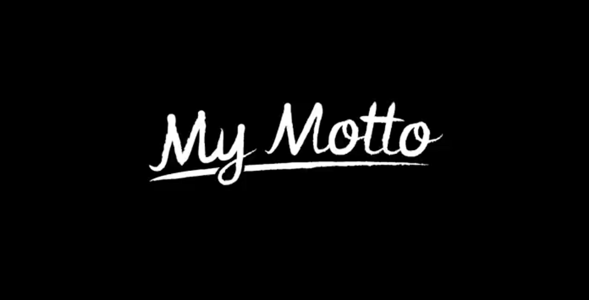

My Resume

Bio

develop your dreams
Edu'

- 2023 - 2024: Online Courses in: Graphic Design and Web Development
- 2020 - 2022: Master's Degree in Marketing and Business Communication
- 2016 - 2019: Bachelor's Degree in Psychology
Work experience
I enjoy creative environments and proximity to people needs. With 5+ years of experience in communication and counseling, I am experienced in:
- optimization processes
- personal development guidance
- efficient communication
- team management and project evaluation
- writing skills (grammar, vocabulary, spelling, sentence construction, structure, research and accuracy, clarity, persuasiveness.)
Skills
- Foreign languages:
- English (Proficent user/C1)
- French (Independent user/B2)
- Turkish (Basic user/A1)
- Italian (Basic user/A2)
- Digital skills: